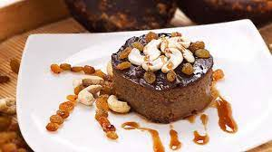

|
|
 |
Ingredients:
- 1 cup jaggery, grated
- 1 cup coconut milk
- 1 cup evaporated milk
- 1 cup cashew nuts, finely chopped
- 1/2 cup sultanas (golden raisins)
- 1/4 cup water
- 4 eggs
- 1/2 teaspoon cardamom powder
- A pinch of salt
Instructions:
- Heat grated jaggery with water in a pan until it melts. Strain to remove impurities.
- In a mixing bowl, beat eggs and add coconut milk, evaporated milk, and melted jaggery. Mix well.
- Add chopped cashew nuts, sultanas, cardamom powder, and a pinch of salt. Mix until ingredients are evenly distributed.
- Pour the mixture into a heatproof dish and cover it with aluminum foil.
- Steam the mixture for about 30-40 minutes or until set.
- Allow it to cool and refrigerate before serving.